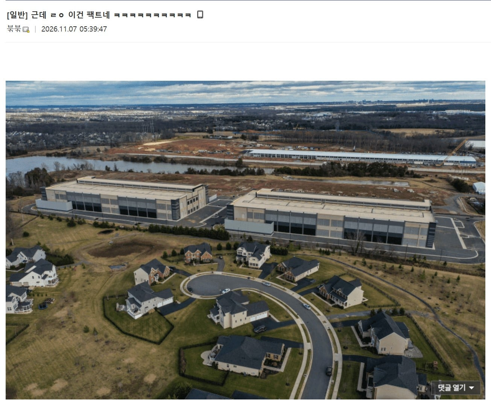

당장 데센 짓는것도 돈 좀 아끼려고 바로 주택가 옆에 짓고 24시간 소음 테러하는데
나중에 잘 먹고 잘 살면 빅테크 CEO들이 선해져서 돈 뿌린다는게 말도 안된다고 함

당장 데센 짓는것도 돈 좀 아끼려고 바로 주택가 옆에 짓고 24시간 소음 테러하는데
나중에 잘 먹고 잘 살면 빅테크 CEO들이 선해져서 돈 뿌린다는게 말도 안된다고 함
시간이 지나면 빅테크 기업 수입이 남으면 틀림없이 돈을 뿌릴겁니다.
ai관련해서 가장 이해안가는게 낙관론의 노동해방론임 ㅋㅋ
길거리에 나앉아서 배급으로 안죽을만큼 받아먹는게 해방이라면 해방인데
대가리 꽃밭새끼들이 놀고 먹으면서 살면 된다고 헛소리하는게 존나 코메디임
지금도 에어컨 설치해주느니 벌금물고 엠뷸부르는 새끼가 있는판에 ㅋㅋㅋ
기본소득은 agi도달전 과도기에나 필요하다 agi도달하면 생산은 무제한이나 마찬가지기때매 소비자란게 필요가 없음 돈이란거 자체도 휴지가 될 판에 99퍼의 서민은 걍 자원낭비나하는 벌레로 볼게 뻔하지
낙관론 개병신새끼들아 그냥
이거만 반박해봐
지금 전세계 인구가 80억명이거든?
근대 ai가 모든걸 다해주는대
굳이 80억이나 있어야함?
그리고 80억에게 전부 소비를 위한 기본 소득을 준다는거잖아
그럼 그 소득은 전부 어디서 튀어나오고 어느정도 배분해야된다는거임?
나는 사이버펑크 2077처럼 기업 다니는 인간들이나 잘살고 나머지는 알빠노라고 생각하거든
기업도 기업국가수준으로 커질태니 그 내부에도 인구가 많을태니까
지금 당장도 큰기업의 부양인구는 장난아님
사펑은 초지능ai한테 인류멸망할뻔한거 겨우 막아서 망 밖에서 사는세계아님?
핵전쟁까지났는대 폴아웃수준 아닌게 어디임
그리고 이게 미국에서 나온 trpg라 그런진 모르겠는대 생각보다 잘살고있음 사람들이
초지능ai가 이기면 터미네이터되는거지
특이점은 오지
단지 그게 너에게 좋다는건 아님. 앞으로 2~30년은 혼돈의 시기가 올거라봄
기업들도 돈을 벌려면 사람들이 소비를 해야 돈을 벌건데 ai가 인간의 노동을 대체하면 소비는 누가함
디스토피아가 될지 유토피아가될지는 권력자에 따라 좌지우지 될거고, 그때도 투표를 할 수 있다면 투표를 통해서 국민들에 필요한 사람을 잘 뽑아야겠지
게다가 앞으로 인간은 180~300살까지도 살거라는데
그 많은 인구가 굶어뒤지게 생겼다? 21세기 러다이어트 일어나는거임. 아니면 농사짖고 살아야됨
과거 로마시대에도 ai(노예들)가 있었음. 로마백성들은 놀고 먹었음. 폭동이 안일어나게끔 콜로세움을 지었고
그리고 지금과 같은 자본주의 사회 유지는 불가할거라봄. 새로운 체제가 필요함
ai가 CEO를 축출하고 국가전산망을 장악하고 핵샤워 갈기고 터미네이터들이 지하에서 기어올라와서 잔존인류 말살할듯
다 천국가니깐 유토피아 맞지
이거라면 ㅇㅈ
사이버펑크2077조차 희망적으로 보는건대
애들이 희망회로에 미쳐있음
사람들 AI를 너무 우습게 보는듯. AI가 인간의 지능 그 자체를 대체하려고 하고 있는데 똑똑하다는 사람도 관심이 없으면 '그래서 다 백수된다고? 그게 말이 되냐?'하고 끝임. ′그래서 AI가 바둑 프로를 이긴다고? 그게 말이 되냐?′ 하는 수준에서 단 한 발자국도 나아가지 못했음. 특슬람이고 나발이고 이 글 보는 사람의 90% 이상은 자기 직업도 곧 AI가 가져갈거라고 진지하게 생각 못함. 혼란스러운 미래가 곧 올게 거의 확실해졌는데 다들 뭐 남 일 얘기 하듯 얘기하네
최소한 같은 인간인 부자들에게조차 낙수효과 이딴거 개좆같은 소리란거 다 나왔는대
Ai에게 낙수효과 바라고있음 ㅋㅋㅋㅋㅋㅋㅋㅋ
개미친새끼들임
결국 긴 얘기를 압축시키자면
인간의 쓸모는 생산성과 약간의 무력임
경제력과 군사력측면에서고
그 외에 인문학적 개념은 뺀다고 쳤을때
AI 발전은 인간의 필요성을 상실시킴
국가와 경제가 안돌아가?
알게뭐람? 대공황 알게뭐람?
알빠노? 내가 지구의 신이될건데
엄청난 생산성과 무력으로 중무장한 집단이
생기는거고 걔네가 법의 테두리안에서 점잖을 떤다?
산업혁명이든 뭐든 발전은 그저 도구였고
여전히 운전자는 인간이였어
지금은 그 운전자가 바뀌는거야
단 한번도 직면한적없는 멸종의 위기,
생사여부의 기로에 놓이는거야
ㄴㄴ "딸깍"하나로 모든게 되는 마법의 지팡이들이 한 업체가 아니라 여러 업체가 가지게 되면 개인이 발휘 할 수 있는 죽창메타가 가능해지기 때문에 발전하라는것임.
죽창메타 = 상위층이 제일 무서워하는것
뭐 더 기술 발전되면 인간의 노동은 어쩌고 저쩌고 권력자들이 할 수 있는 악의적인 부작용은 어쩌고 하며 공포심 자극이 기술 개발되고 늘 나오는 개좆빠는 반지성주의자들의 논리였는데,
지금만 봐도 기술 발전해서 뭐 총으로 민간인들 쏴죽여가며 탄압하는게 중세시대때 농노들 마차로 밀어죽이고 따지면 교수형 처하던때 보다 더 일상적인 일이 됐음?
핵심은 상위권들이 서민들 눈치를 볼 수 있게 할 수 있냐 마냐가 핵심임.
그 메타의 기반은 일반화된 무력과 기술의 수준이 필수임.
1인 1AK를 보급하자!
저기 살면 속도 더 빠르냐
지금 누리는건 뭔데
존나 너무 당연해서 대가리가 돌아버렸나?
일개 시민따위가 개인의 역량으로 이정도 문명을 누리면서 사는게 가당키나 할거라고 생각하나
지금만해도 존나게 보급해주고 있는데
지금도 자본과 힘의 논리로 노예 만들면 충분히 만드는데 왜 못하고 있겠음
초지능이 생기면 갑자기 세상이 망하고 대기업이 노예를 부린다고? 거기 입사시켜달라고 비는게 아니고? 존나 웃기네
ㅋㅋㅋㅋㅋ
우리 다음 세대는 거의 망했다고 봐야지
인간이 필요가 없는데 왜 인간을 챙겨줄거라는 거임? 진짜 모름
이게 핵심인대
지금 당장 생각해도 인간을 살려둘 이유가 1도 없는대
유토파아 이지랄하고있음 ㅋㅋㅋㅋㅋ
유튭만 봐도 좆같은 광고가 계속 생기는데 ㅋㅋㅋㅋ
둘중하나지. 돈뿌리는 중동이 되던가
기업국가가 되던가
근데 저 자료화면 여러번 보는데, 보면 볼수록 골때리네. 땅값이고 지랄이고 미국에서 집 저렇게 크게 지으려면 존나 비싼 고급주택단지일텐데 거기다가 저런걸 박아버린거 보면 진짜 노빠꾸네 ㅋㅋㅋㅋㅋㅋㅋㅋ 부유층 동네에서 저렇게 노빠꾸로 할 정도면 진짜 중산층미만은 사람새끼로 안보긴 하겠다.